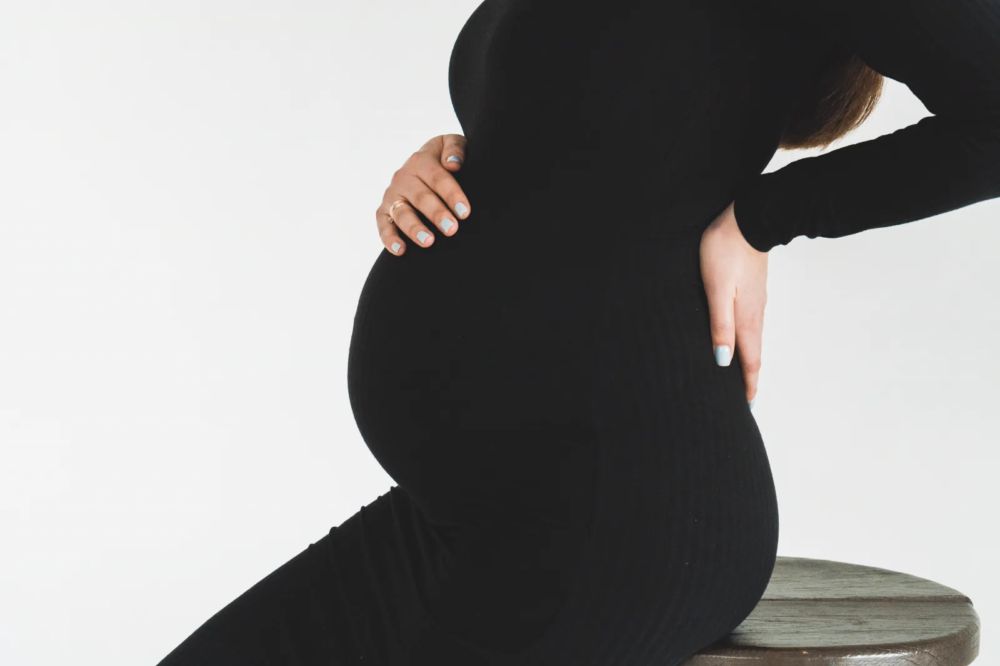
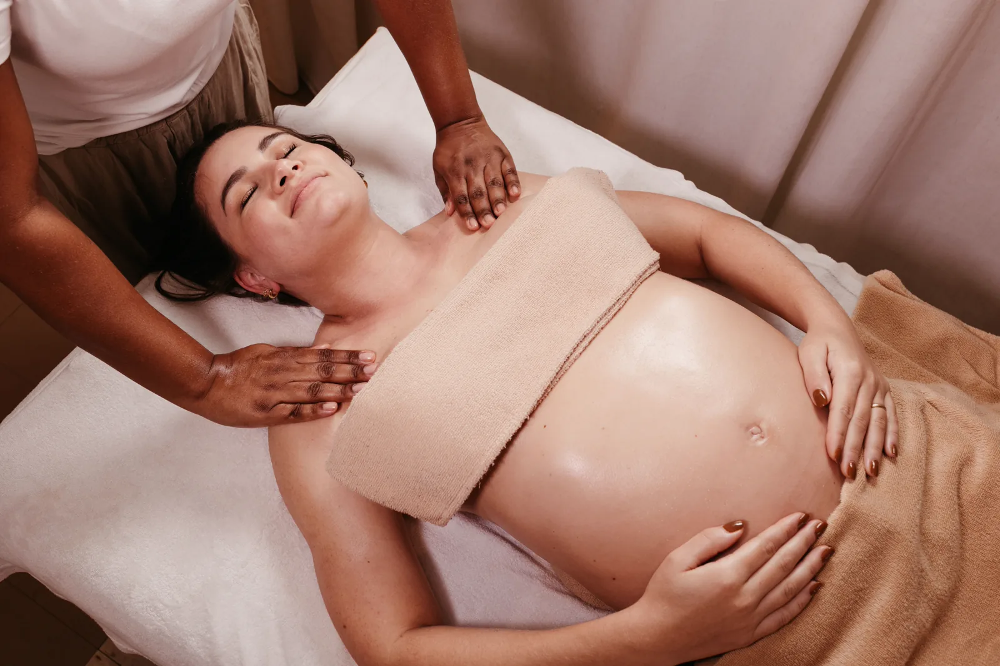
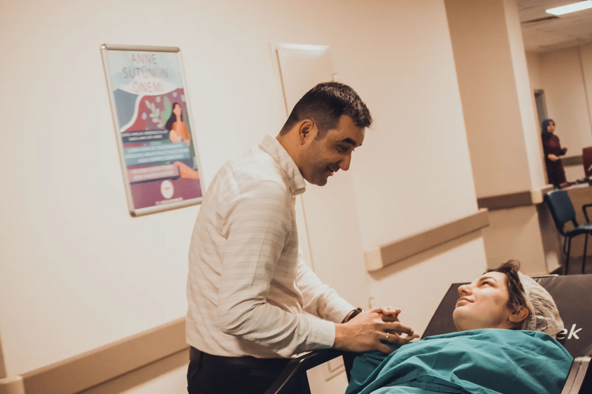
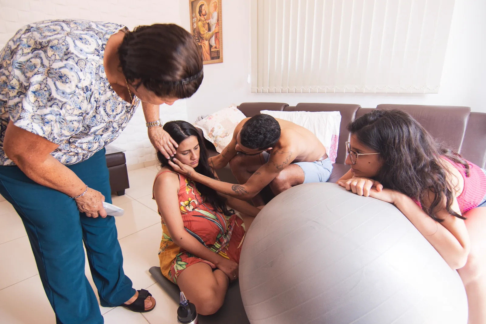
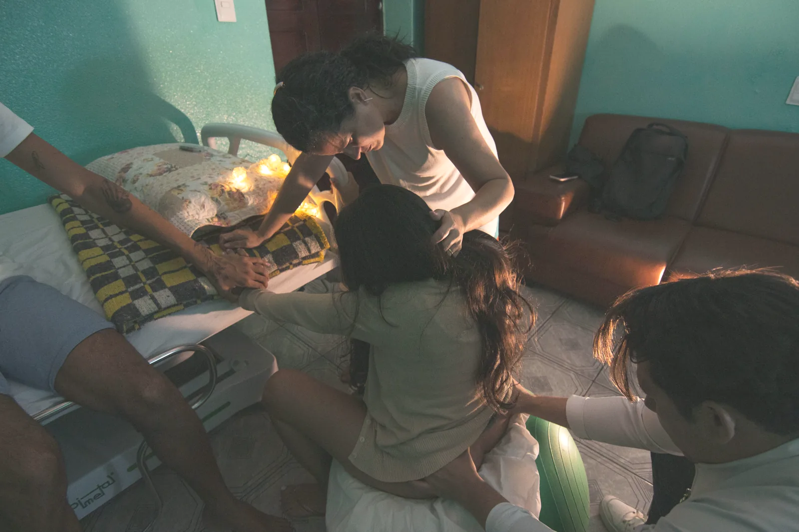
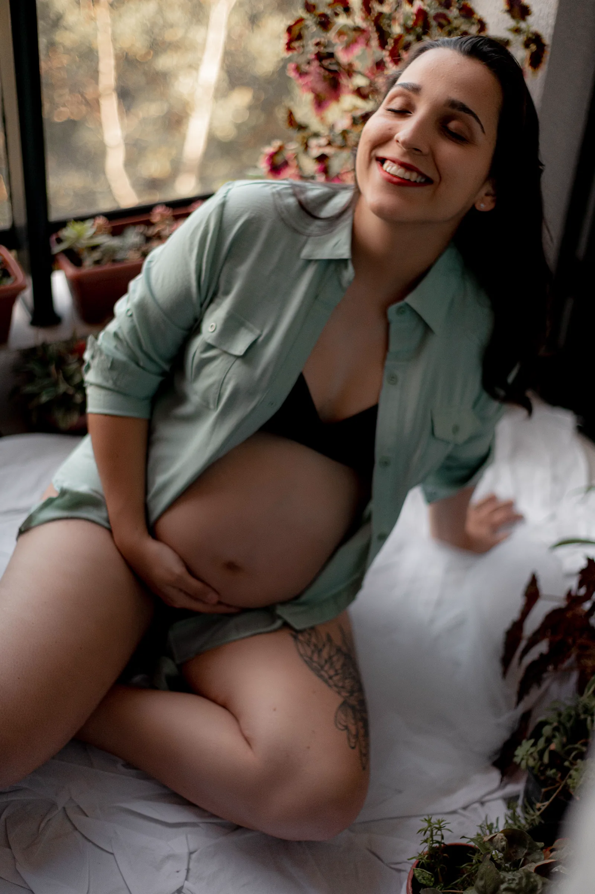
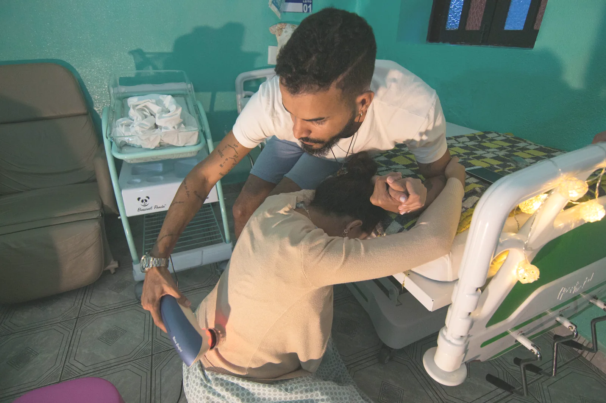

A01
Nyeri Punggung saat Kehamilan
Denys Mikhalevych · Pexels
Pexels License · kredit courtesy · model release UNVERIFIED
INTEGRATED · review pengguna pending
Semua foto di bawah ini dipasang pada artikel lokal. Lisensi Pexels diperiksa dan kredit fotografer ditautkan sebagai courtesy attribution. Status integrasi tidak berarti persetujuan visual pengguna, persetujuan klinis, atau verifikasi catatan model release.

A01
Denys Mikhalevych · Pexels
Pexels License · kredit courtesy · model release UNVERIFIED
INTEGRATED · review pengguna pending
A04
cottonbro studio · Pexels
Pexels License · kredit courtesy · model release UNVERIFIED
INTEGRATED · caption menjelaskan foto bukan penggunaan kompres

A05
Jonathan Borba · Pexels
Pexels License · kredit courtesy · model release UNVERIFIED
INTEGRATED · foto konteks, bukan instruksi teknik
A06
Mikhail Nilov · Pexels
Pexels License · kredit courtesy · model release UNVERIFIED
INTEGRATED · review pengguna pending

B01
melis can · Pexels
Pexels License · kredit courtesy · model release UNVERIFIED
INTEGRATED · review pengguna pending

B05
Hannah Barata · Pexels
Pexels License · kredit courtesy · model release UNVERIFIED
INTEGRATED · foto tidak memperlihatkan kompres

B06
Hannah Barata · Pexels
Pexels License · kredit courtesy · model release UNVERIFIED
INTEGRATED · pengganti fokus pada dukungan emosional saat persalinan
T01
Pavel Danilyuk · Pexels
Pexels License · kredit courtesy · model release UNVERIFIED
INTEGRATED · tidak menetapkan teknik napas
T02
Polina Tankilevitch · Pexels
Pexels License · kredit courtesy · model release UNVERIFIED
INTEGRATED · foto bukan bukti efektivitas playlist

T03
Gisele Seidel · Pexels
Pexels License · kredit courtesy · model release UNVERIFIED
INTEGRATED · foto ibu hamil beristirahat

T04
Hannah Barata · Pexels
Pexels License · kredit courtesy · model release UNVERIFIED
INTEGRATED · koreksi tonal ringan; konteks dukungan, bukan teknik pijat